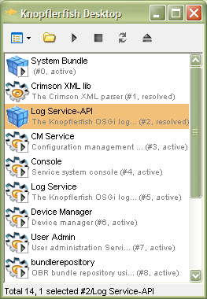

Knopflerfish AWT Desktop

AWT desktop on Windows XP
This is small (about 70k), standalone an AWT-based GUI Desktop for OSGi frameworks. It has no dependencies on other bundles but will attach to the KF console when present.
- Bundle list
- Bundle install (local file browser + URL)
- Bundle start/stop/update/uninstall
- UI for the KF text console
Tested platforms
- J9/Pocket PC
- Sun 1.4.2/WIndows
Browse source